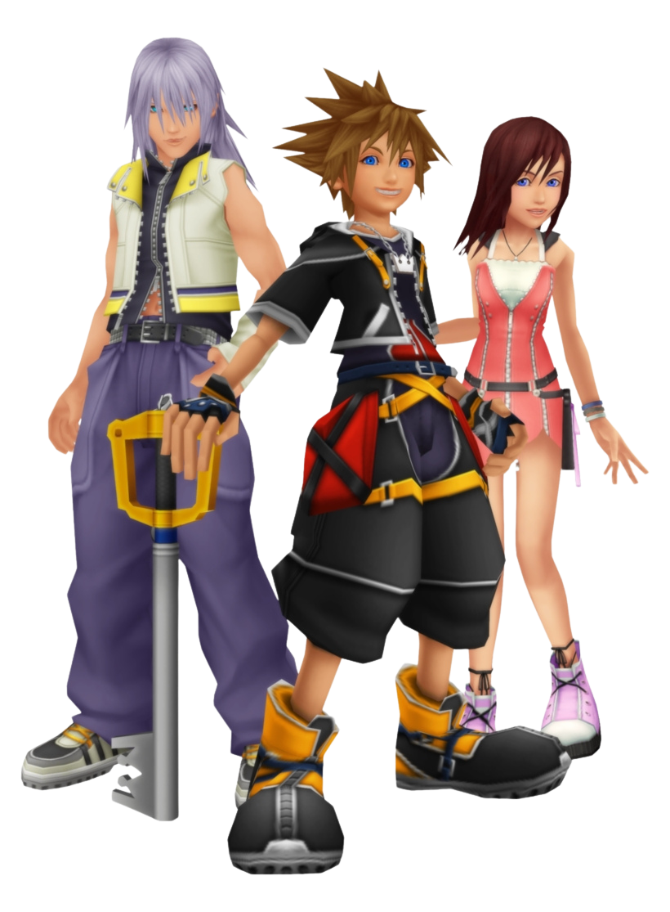

The Power of Friendship
In Kingdom Hearts II, friendship is built on trust, loyalty, and emotional connection. Sora’s journey is driven by his desire to reunite with his friends, showing how meaningful relationships shape our decisions.
Sora, Riku, and Kairi
Sora, Riku, and Kairi grew up together on Destiny Islands and shared a close friendship. They are separated when darkness attacks their world and destroys the islands. Sora is sent to other worlds, Kairi is separated and loses her physical form for a time, and Riku is pulled into darkness while trying to protect her. Even though they are split apart, Sora never gives up on finding them, showing how strong their bond remains.
Loyalty and Forgiveness
Riku struggles with darkness, which represents fear, anger, and negative influence. At times he makes choices that distance him from Sora and Kairi, but Sora continues to believe in him. This reflects real-life friendships where support, patience, and forgiveness are important even when someone changes or makes mistakes.
Light, Darkness, Heartless, and Nobodies
The game is built around the idea of light and darkness. Light represents hope, connection, and friendship, while darkness represents negative emotions that can take over a person. Heartless are creatures formed when someone loses their heart to darkness. Nobodies are what remain when a strong heart is lost, like Roxas. Even though Nobodies are not “complete” people, they still form relationships and show emotions, proving that identity is more complex than good or evil.
Everyday Friendship
Roxas is Sora’s Nobody, created when Sora lost his heart for a short time. Even though they are separate, Roxas is still connected to Sora and helps show what Sora experienced during that time. Roxas spends simple moments with his friends Axel and Xion, like talking and hanging out. These scenes show that friendship does not always need big events to matter. Roxas helps explain Sora’s story by showing what it feels like to lose connections, making Sora’s goal of finding his friends more meaningful.
Real-Life Lessons
Friendship requires effort, trust, and emotional support. The game reflects how relationships can grow stronger through challenges.
Core Values
- Trust
- Loyalty
- Forgiveness
- Sacrifice
- Support